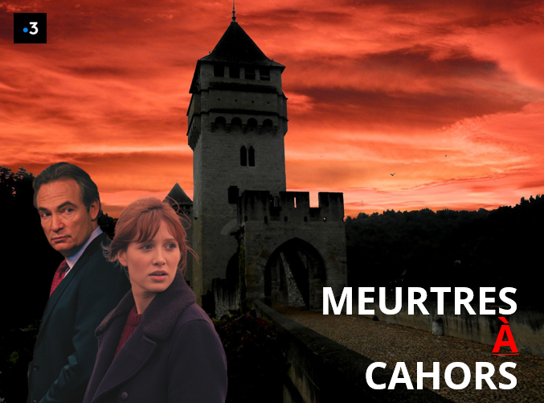

À Cahors, l’assassinat d’un historien amateur ravive la légende du diable du Pont Valentré… et les secrets empoisonnés des grandes familles du terroir.
Téléfilm · Collection « Meurtres à… » · Thriller
Dépôt N°000842619 · Marie Godart & Yohann Ghellis · Pour Eddy Fluchon
Accroche
Le corps d’Hector Lestelle, historien amateur, est retrouvé égorgé en haut de la tour du Pont Valentré, et la rumeur du pacte avec le diable refait surface, tandis que la capitaine Laurence Bresson et le commissaire-priseur Victor Waplaire remontent une généalogie de mensonges au cœur du Lot.
Est-ce vraiment le diable qui a assassiné Hector Lestelle, historien amateur et laborantin, laissant son corps égorgé en haut de la tour du Pont Valentré ? La jeune capitaine Laurence Bresson mène l’enquête aux côtés de Victor Waplaire, vieux commissaire-priseur, ami de la victime, revenu pour l’enterrer… et trouver son tueur. Victor connaît les gens influents de la région et sait les faire parler, mais l’affaire dépasse vite le simple crime pour tutoyer le diable et dévoiler un pacte maudit scellé il y a des siècles avec l’ange déchu.
Au cœur du Lot, Meurtres à Cahors nous entraîne dans une immersion sombre et envoûtante parmi les grandes familles du terroir, un monde d’apparences et de rivalités où le foie gras et la truffe cachent des vérités inavouables. Thriller contemporain, drame intime et légende locale autour du Pont Valentré, du Lot brumeux, du Mont Saint-Cyr et du gouffre de Padirac.